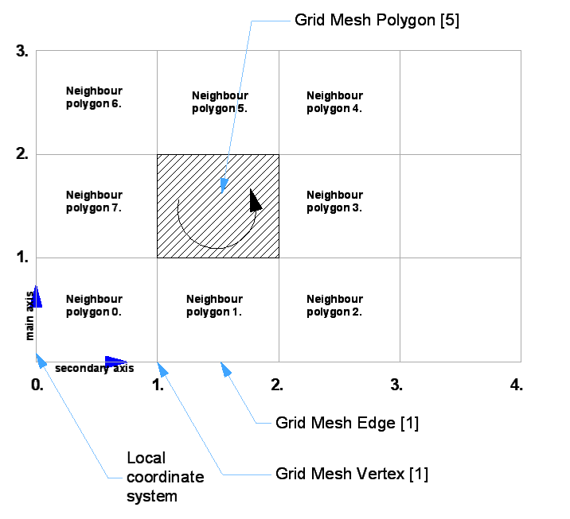

API_GridMesh
Describes a Curtain Wall segment geometry.
typedef struct {
bool useIDs;
bool filler_1[7];
API_GridElemID lowerLeftPolyID;
API_GridElemID lowerRightPolyID;
GS::Array<API_GridMeshLine> meshLinesMainAxis;
GS::Array<API_GridMeshLine> meshLinesSecondaryAxis;
GS::HashTable<API_GridElemID, API_GridMeshVertex> meshVertices;
GS::HashTable<API_GridElemID, API_GridMeshPolygon> meshPolygons;
GS::HashTable<API_GridElemID, API_GridMeshEdge> meshEdgesMainAxis;
GS::HashTable<API_GridElemID, API_GridMeshEdge> meshEdgesSecondaryAxis;
API_GridElemID cornerPointIDs[4];
UInt32 filler_2[2];
} API_GridMesh;
Members
- useIDs
- For internal use.
- filler_1
- Reserved for further use.
- lowerLeftPolyID
- The identifier of the left lower grid mesh polygon.
- lowerRightPolyID
- The identifier of the right lower grid mesh polygon
- meshLinesMainAxis
- Array of Grid Lines belong to the main axis (vertical).
- meshLinesSecondaryAxis
- Array of Grid Lines belong to the secondary axis (horizontal).
- meshVertices
- Table of grid mesh vertices with identifier keys.
- meshPolygons
- Table of grid mesh polygons with identifier keys.
- meshEdgesMainAxis
- Table of Grid Edges belong to the main axis (vertical).
- meshEdgesSecondaryAxis
- Table of Grid Edges belong to the secondary axis (horizontal).
- cornerPointIDs
- the identifiers for the Lower left, lower right, upper right and upper left vertices of the grid mesh.
Remarks

Requirements
- Version: API 12.0 or later
- Header: APIdefs_Base.h
See Also
API_GridMeshDirection, API_GridMeshHead, API_GridMeshVertex, API_GridMeshEdge, API_GridEdgeInfo
API_GridMeshLine, API_GridMeshPolygon
API_Interval, API_Plane3D, API_Surface3D
API Types